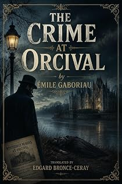

Le Crime d'Orcival
The novel that invented crime fiction
by Émile Gaboriau · translated by Edgard Bronce-Ceraypar Émile Gaboriau · traduit par Edgard Bronce-Ceray
The bookLe livre
A poacher's boy crosses a ditch to cut a willow branch and finds something in the park of Valfeuillu that makes him scream for his father. The Comtesse de Trémorel is dead, the Comte has vanished, and the evidence in the house is almost too helpful. Gaboriau's 1867 novel is where the genre acquires its most durable trick: a crime scene arranged to be read, and a detective who notices that it has been arranged.
Le fils d'un braconnier franchit un fossé pour couper une branche de saule et trouve, dans le parc de Valfeuillu, de quoi appeler son père en hurlant. La comtesse de Trémorel est morte, le comte a disparu, et les indices dans la maison sont presque trop serviables. Le roman de Gaboriau (1867) est le moment où le genre acquiert son tour le plus durable : une scène de crime disposée pour être lue, et un enquêteur qui remarque qu'elle a été disposée.
From the opening pagesLes premières pages
There was not a tree in the meadow. So the young man made for the park of Valfeuillu, only a few steps off, and, caring little for Article 391 of the Penal Code, he crossed the wide ditch that girdles M. de Trémorel's property. He meant to cut a branch from one of the old willows which, at that spot, trail their weeping boughs in the current.
He had barely drawn his knife from his pocket, casting about him meanwhile the uneasy glance of the marauder, when he uttered a strangled cry.
— Father! Hey! Father!
— What is it? answered the old poacher, without troubling himself.
— Father, come, Philippe went on, in heaven's name, come quickly!
Jean La Ripaille knew by the hoarseness of his son's voice that something extraordinary was afoot. He dropped his scoop, and, alarm lending him wings, in three bounds he was in the park.
He too stood aghast before the sight that had terrified Philippe.
On the bank of the river, among the rushes and the water-flags, lay the body of a woman. Her long loosened hair was scattered among the water-weeds; her grey silk dress, torn to ribbons, was fouled with mud and blood. The whole upper part of the body was plunged in the shallow water, and the face was buried in the ooze.
— Murder! muttered Philippe, his voice shaking.
— That's certain enough, answered La Ripaille indifferently. But who can this woman be? Upon my word, she looks like the countess.
— We shall soon see, said the young man.
He took a step towards the corpse; his father caught him by the arm.
— What would you be at, you fool! said he; one must never touch the body of a murdered person without the law.
— Do you think so?
— Certainly! There are penalties for it.
— Then let us go and tell the mayor.
— What for? Perhaps the folk hereabouts don't bear us ill will enough already! Who knows but we should be accused ourselves?
— Still, father—
— What! If we go and warn M. Courtois, he'll ask us how and why we came to be in M. de Trémorel's park to see what was going on there. What is it to you that they've killed the countess? Her body will be found well enough without you... come along, let us be off.
But Philippe did not stir. His head bowed, his chin propped in the palm of his hand, he was thinking.
— We must give warning, he declared, in a decided tone; we're not savages. We'll tell M. Courtois that it was in skirting the park in our punt that we caught sight of the body.
Old La Ripaille resisted at first, then, seeing that his son would go without him, he seemed to yield to his urging.
So they crossed the ditch again, and, leaving their tackle in the meadow, they made all haste towards the house of the mayor of Orcival.
Situated three miles from Corbeil, on the right bank of the Seine, twenty minutes from the Évry station, Orcival is one of the most delightful villages in the neighbourhood of Paris, in spite of the infernal etymology of its name.
The noisy, plundering Parisian, who on Sundays swoops down upon the fields, more destructive than the locust, has not yet discovered these smiling stretches of country. The heartbreaking reek of frying from the riverside taverns does not there smother the scent of the honeysuckle. The choruses of the boating-men, the ritornello of the cornet at the public dances, have never startled its echoes.
Lazily crouched upon the gentle slopes of a hillside washed by the Seine, Orcival has white houses, delicious shade, and a brand-new steeple which is its pride.
On every side vast pleasure-grounds, kept up at great expense, surround it. From the height one can make out the weathervanes of twenty châteaux.
To the right are the high woods of Mauprévoir and the pretty little castle of the Comtesse de la Brèche; opposite, on the other side of the river, here are Mousseaux and Petit-Bourg, the old Aguado estate, now the property of an illustrious coachbuilder, M. Binder; to the left, those fine trees belong to the Comte de Trémorel, that great park is the park of Étiolles, and in the distance, away yonder, is Corbeil; that huge building, whose roof overtops the great oaks, is the Darblay mill.
The mayor of Orcival lives at the very top of the village, in one of those houses that figure in the dreams of men with a hundred thousand francs a year.
Formerly a manufacturer of printed cloth, M. Courtois began in trade without a penny to bless himself with, and, after thirty years of unremitting toil, retired with a round four millions.
He proposed then to live very quietly, between his wife and his daughters, spending the winter in Paris and the summer in the country.
But of a sudden he was seen restless and fidgety. Ambition had just bitten him to the heart. He made a hundred approaches in order to be compelled to accept the mayoralty of Orcival. And he accepted it, sorely against his will, as he will tell you himself.
That mayoralty is at once his happiness and his despair. Apparent despair, inward and real happiness.
He is a fine sight when, his brow heavy with clouds, he curses the cares of office; he is a finer one when, his stomach girt with the gold-tasselled sash, he marches in triumph at the head of the municipal council.
Everyone was still asleep at the mayor's when the Bertauds, father and son, came and beat upon the heavy knocker of the door.
After a good while, a servant three-quarters awake and half dressed appeared at one of the ground-floor windows.
— What is it, you good-for-nothing scamps? he demanded, in a tone of ill humour.
La Ripaille did not think fit to resent an insult which his reputation in the parish justified only too well.
— We want to speak to monsieur le maire, he answered, and it's terribly urgent. Go and wake him, M. Baptiste; he won't scold you.
— Scold me! As if anyone ever scolds me! growled Baptiste.
It took, however, a good ten minutes of parley and explanation to make up the servant's mind.
At last the Bertauds appeared before a short, stout, red-faced man, exceedingly put out at being dragged from his bed so early: it was M. Courtois.
It had been settled that Philippe should do the speaking.
— Monsieur le maire, he began, we come to bring you news of a great misfortune; there's been a crime for certain at M. de Trémorel's.
M. Courtois was the count's friend; at this unlooked-for announcement he turned whiter than his shirt.
— Ah! good God! he stammered, incapable of mastering his emotion, what are you telling me — a crime!...
— Yes, we saw a body just now, and as sure as you stand there, I believe it's the countess's.
The worthy mayor raised his arms to heaven with an air of utter bewilderment.
— But where, but when? he asked.
The excerpt ends here — about 1,201 words of the published edition.L'extrait s'arrête ici — environ 1,201 mots de l’édition parue.
KindlePaperbackBrochéContextContexte
Gaboriau invented the detective novel. His Monsieur Lecoq was reading footprints and reconstructing crimes two decades before Sherlock Holmes existed — Conan Doyle has Holmes dismiss Lecoq by name, which is how we know he had read him. English readers have known Gaboriau almost entirely through nineteenth-century translations that nobody has revisited. The Gaboriau Project gives the father of the genre a modern English voice, starting where the genre started.
Gaboriau a inventé le roman policier. Son Monsieur Lecoq lisait les empreintes et reconstituait les crimes vingt ans avant l'existence de Sherlock Holmes — Conan Doyle fait congédier Lecoq par Holmes, nommément, et c'est ainsi qu'on sait qu'il l'avait lu. Le lectorat anglophone n'a connu Gaboriau qu'à travers des traductions du XIXe siècle que personne n'a reprises. Le Projet Gaboriau redonne au père du genre une voix anglaise moderne, en commençant là où le genre a commencé.
The whole programmeTout le programme